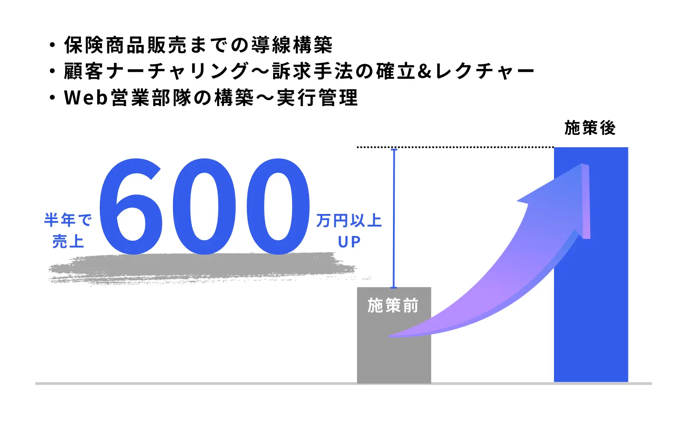

この記事でわかること
- CMO代行おすすめ7社の比較表（タイプ・料金・支援範囲・契約期間と解約条件）
- 7社それぞれの特徴・向いているケース・注意点（公式サイトのリンク付き）
- 月額を最低契約期間の総額（3か月分）に直した並べ替え
- 月額に実行作業が含まれるかの公開状況マトリクス
- 初回面談で確認する5つの質問と、状況別の選び方
CMO代行とは？顧問・正社員採用との違い
CMO代行は、社内にいない最高マーケティング責任者（CMO）の役割を、外部の人や会社に月額で担ってもらう契約です。「外部CMO」「社外CMO」「マーケティング責任者代行」など呼び方はさまざまで、サービス名が同じでも中身は会社ごとに大きく違います。
大まかな違いは、どこまで「判断」と「実作業」を引き受けるかにあります。顧問は数値や施策をレビューして助言するのが中心、CMO代行は戦略・予算・KPIの設計から外注先への指示まで踏み込み、広告運用や制作の実作業は別メニューという会社が多く見られます。正社員のCMOを採用する場合は採用費と固定の人件費がかかる一方、社内に知見が残りやすいという違いがあります。顧問とCMO代行の費用の違いは、CMO顧問・CMO代行の違いと費用相場｜月10万〜150万円の目安で整理しています。
この記事は、「CMO代行を頼むと決めて、会社を比べる段階」の方に向けた比較です。上位の比較記事の多くは、会社の一覧と特徴の紹介が中心でした。そこで本記事では、各社の公式ページで確認できた料金と契約条件に絞り、さらに最低契約期間の総額に直した並べ直しと、月額に実行作業が含まれるかどうかの公開状況を表にしています。
CMO代行おすすめ7社の比較表
2026年10月20日時点で、各社の公式ページを実際に開いて確認できた内容だけを並べます。公開されていない項目は「公開なし」「記載なし」と書き、推測では埋めていません。順位は付けていません。当社は先頭に置いています。
比較の前に。今回確認できたのは「CMO代行」「社外CMO」などを掲げる会社の公式ページです。月額が5万円台から60万円台までと幅があるのは、会議での助言だけの会社と、実行まで含む会社が同じ名前で並んでいるためです。金額だけで高い・安いは判断できません。
| 会社（公式ページ） | タイプ | 料金（公開値） | 支援範囲 | 契約期間・解約 |
|---|---|---|---|---|
| LnX合同会社 （マーケティング顧問制度） |
顧問・責任者型（東京） | アドバイザリー月8万円／グロース伴走月15万円／マーケティング責任者月30万円／CMO代行月50万円〜（個別設計）。税別想定 | 戦略・KPI設計、数値・施策レビュー、広告・SNS・LP・CRMの分析、月次改善レポート、社内担当者・外注先への指示。広告運用の実作業、LP・Web制作などは別見積もり | 原則3か月（1か月目に現状分析と方針設計） |
| 株式会社プロクモ | 戦略立案型のCMO代行（東京） | 月額50万円（税別）、初期費用なし。実行支援は別料金（LP制作20万円〜/1本、広告運用は運用額の15〜18%、SEO支援20万円〜/月、SNS運用10万円〜/月） | 現状分析、KGI/KSF/KPIの設定、施策提案、推進体制の整備。実行までの支援は「＋α」 | 原則3か月以上。途中解約は原則不可、やむを得ない場合は進行状況に応じて解約金 |
| Ai CMO株式会社 | 段階別プランのCMO代行 | 参考費用：アドバイザリー（MTGのみ）月5万円〜／コンサルティング及び実行支援 月30万円〜／全領域の包括的実行支援 月60万円〜。詳細は問い合わせ | 現状分析、KPI設定、戦略立案、実行体制の構築、外部パートナーとの窓口一元化、実行支援。内製化支援も | 3か月の短期から年間単位まで相談可。最低契約は記載なし |
| Good Marketer Inc. | 社外CMO・運用併走型 | ライト月15万円〜／スタンダード（推奨）月30万円〜／エンタープライズ個別見積。初期構築費（計測・制作物など）は料金に含まれ、ツール費用と広告費は別途実費 | 戦略設計から実装、計測・改善のPDCAまで。広告運用（Meta・Google）、LINE、SNS・SEO・MEO、LP・HP、営業設計など。既存の代理店や制作会社との併走・ディレクションも | 記載なし |
| Rplus株式会社 （まるっとマーケ） |
作業時間パック型のマーケ代行 | ライト11万円（目安10〜15時間）／スタンダード22万円（目安25時間）／プロ33万円（目安40時間）。いずれも税込。初期費用はヒアリング・リサーチ分がかかるが、キャンペーンで0円の場合あり（金額は記載なし） | 作業代行（リサーチ、入稿、SNS更新、GA・GTM設定など）、クリエイティブ代行、制作ディレクション、戦略相談 | 1か月から。最低契約期間なし |
| 株式会社デジタルアイデンティティ | 社内スタッフ型の常駐に近い支援 | 公開なし | マーケティング戦略の立案、会議への参加、社内資料の作成、社内スタッフへの教育、社内での常駐作業など（一例） | 記載なし |
| 株式会社プレジャーデサイン | 集客から営業・企画まで一括（東京） | 「買い切りプラン」と「成果報酬型」から選択と記載。金額は公開なし | 集客（サイト制作・SEO・MEO・広告・SNS・動画）、営業（提案営業・セミナー営業）、企画（商品企画・ブランディング）、社内CMOの育成、営業同行、社内研修 | 記載なし。最大90日間の全額返金補償制度を掲げる |
※ 各社の情報は2026年10月20日に公式ページを確認したものです。料金・支援範囲は改定される可能性があるため、発注前に必ず各社にご確認ください。税込・税別の表記は各社で異なり、公式ページに明記がないものは表記を省いています。順位付けは行っておらず、掲載順は当社を先頭に、以降はおおまかなタイプ別の並びです。
当社の条件も、他社と同じ粒度で載せておきます。当社のマーケティング顧問制度は、代表が担当者に引き継がず直接支援する形で、料金は月8万円（アドバイザリープラン：月1回定例・数値と施策のレビュー・改善提案とチャット相談）、月15万円（グロース伴走プラン：月2回定例・KPIと施策設計・月次改善レポート）、月30万円（マーケティング責任者プラン：戦略策定・予算案設計・社内外への指示・経営陣への月次報告）の3段階で、いずれも税別想定です。事業計画や組織構築まで踏み込む「CMO代行」は月50万円〜で、個別に設計します。最低契約期間は原則3か月です。他社の提案書や見積もりを並べた状態でのご相談も歓迎です。
噛み合わない領域も正直に書きます。当社は戦略・数値分析・施策設計・ディレクションと軽微な設定・修正までが顧問料の範囲で、広告運用の実作業、LP・Web制作、バナーや動画の制作は別見積もりです。月額の中に実作業まで含めたい場合や、社内に常駐してほしい場合は、上の表の他社のほうが条件に合う可能性があります。
7社それぞれの特徴を個別に見る
表だけでは、各社がどこまで担当し、どこから先は別の手当てが要るのかが分かりません。ここからは1社ずつ、公式サイトで確認できた特徴・向いているケース・注意点を整理します。繰り返しになりますが、順位ではありません。
LnX合同会社（マーケティング顧問制度）
公式サイト：https://lnx.co.jp/ ／ サービスページ：マーケティング顧問・外部CMOの費用と支援内容｜LnX合同会社
東京都渋谷区のマーケティング会社で、代表が担当者に引き継がず直接支援する顧問制度です。戦略・KPI設計、広告運用・SNS・LP・Webサイト・CRMの分析、実行ディレクション、AIを使った業務効率化を支援範囲に挙げています。月1回定例のアドバイザリー、月2回定例のグロース伴走、社外のマーケティング部長として全体を統括する責任者プランの3段階があります。
料金と範囲の線引きは、LPに書かれているとおりです。戦略立案・数値分析・改善提案・施策設計・ディレクション・軽微な設定/修正は基本料金に含まれ、広告運用の実作業、LP・Web制作、バナー・動画制作、SNS投稿制作、撮影、大規模な計測環境構築などは別途お見積もりです。広告費・制作費・ツール利用料などの実費も別で、成果や売上を保証するものではありません。
向いているケース：判断の軸を持つ外部の人がほしい。代理店や制作会社の提案を見極めたい。採用するほどの予算や体制はない。
注意点：実作業を月額に含めたい、常駐してほしい、成果報酬型で頼みたいという場合は条件が合いません。最低契約期間は原則3か月です。
株式会社プロクモ（PROCMO）
公式サイト：https://procmo.co.jp/ ／ サービスページ：CMO代行（ストクモ）｜株式会社プロクモ
東京都渋谷区に本社を置く会社で、マーケティング戦略コンサルティングを「CMO代行」として提供しています。今回の7社の中で、月額・初期費用・最低期間・解約条件をひとつのページにまとめて載せている点が目立ちます。月額は50万円（税別）、初期費用なし、契約は原則3か月以上です。
もうひとつの特徴は、戦略と実行の費用を分けて見せていることです。月額は現状分析、KGI/KSF/KPIの設定、施策提案、推進体制の整備までで、実行支援は「＋α」の扱いです。LP制作は1本20万円〜、広告運用は運用額の15〜18%、SEO支援は月20万円〜、SNS運用は月10万円〜と、メニュー別の金額が公開されています。担当は複数のコンサルタントで、稼働時間や訪問頻度はページに記載がありません。
向いているケース：戦略づくりの費用と実行の費用を分けて見積もりたい。最低期間や解約の条件を先に知っておきたい。
注意点：途中解約は原則できず、やむを得ない場合は進行状況に応じた解約金が発生すると書かれています。月額は戦略部分で、実行を任せると別に費用が積み上がります。次章の3か月総額も合わせて見てください。
Ai CMO株式会社
公式サイト：https://ai-cmo.co.jp/ ／ サービスページ：CMO代行（RENTAL "CMO" SOLUTION）｜Ai CMO株式会社
AIと人的支援の両方を使ってマーケティング業務を代行するとしている会社です。CMO代行ページでは、現状分析・KPI設定・戦略立案から、実行体制の構築、外部パートナーとの窓口の一元化、営業やPRなど他部署との連携までを段階で示しています。新規事業、サイト改善、オウンドメディア、広告運用、SNS運用、MA・CRM、SEOを支援領域に挙げ、内製化支援も行うとされています。
料金は「参考費用」として3段階で公開されています。会議のみのアドバイザリーが月5万円〜、コンサルティング及び実行支援が月30万円〜、全領域の包括的な実行支援が月60万円〜です。詳細は問い合わせとされており、「〜」の金額は下限と読むのが安全です。税の表記、最低契約期間、稼働形態、対象外業務はページに記載がありません。
向いているケース：まず会議だけの助言から始めて、必要に応じて実行まで段階的に広げたい。
注意点：3段階の違いが「作業量」なのか「担当者の人数」なのかはページから読み取れません。見積もり時に、各段階で毎月何が成果物として出るかを確認してください。
Good Marketer Inc.
公式サイト：https://goodmarketer.net/ ／ サービスページ：社外CMO（マーケティング責任者代行）｜Good Marketer
社外CMOを主力に、LINEマーケティング、Web広告・LP、MEO、業務効率化・DXなどのメニューを並べている会社です。社外CMOのページでは、戦略設計から実装、計測・改善のPDCAまで一貫して支援するとし、広告運用（Meta・Google）、LINE・Lステップなどの拡張ツール、SNS・SEO・MEO、LP・HP、営業設計を対象に挙げています。
料金はライト月15万円〜（アドバイスと小規模運用支援）、スタンダード月30万円〜（媒体の戦略設計と定期PDCAを含む運用支援、推奨プラン）、エンタープライズは個別見積です。初期構築費（計測・制作物など）は料金に含まれ、ツール費用と広告費は別途実費と書かれています。既存の代理店や制作会社と役割分担して併走し、外注先のディレクションも可能とされています。
向いているケース：戦略だけでなく、運用の一部まで月額に含めたい。すでに代理店や制作会社がいて、その上に立つ役割がほしい。
注意点：契約期間・所在地はページに記載がありません。「〜」の金額から、実際にいくらになるかは見積もりで確認が必要です。
Rplus株式会社（まるっとマーケ）
公式サイト：https://rplu-s.co.jp/ ／ サービスページ：まるっとマーケ｜Rplus株式会社
記事制作やLP制作、ホワイトペーパーなどのコンテンツマーケティングを手がける会社で、「まるっとマーケ」はマーケティング業務の代行メニューです。作業代行（リサーチ、WordPress・Shopify入稿、SNS更新、MEO、GA・GTM設定、LINE公式の立ち上げなど）、クリエイティブ代行（バナー、ショート動画、企画書）、制作ディレクションやレビュー、戦略相談を組み合わせます。
料金は作業時間の枠で決まる点が他社と違います。ライト11万円（目安10〜15時間）、スタンダード22万円（目安25時間）、プロ33万円（目安40時間）で、いずれも税込です。契約は1か月から、最低契約期間はなく、稼働工数は1か月分まで持ち越せると書かれています。連絡手段はChatworkが基本です。
向いているケース：CMOの席を置くより、手が足りない作業を月ごとに必要な時間だけ頼みたい。まず1か月から試したい。
注意点：戦略責任者を置くサービスではなく、時間枠で作業と相談を頼む形です。「CMO代行」と同じ土俵で比べるときは、決める役割まで含むのかを確認してください。
株式会社デジタルアイデンティティ
公式サイト：https://digitalidentity.co.jp/ ／ サービスページ：CMO代行｜株式会社デジタルアイデンティティ
広告配信、SEO、制作、マーケティングDXなどを手がけるデジタルマーケティングの会社で、サービス一覧にCMO代行が含まれています。CMO代行のページでは、マーケティング戦略の立案、マーケティング会議への参加、社内資料の作成、社内スタッフへのマーケティング教育、社内での常駐作業などが一例として挙げられています。
特徴は、「貴社マーケティング部門のスタッフとして稼働する」形が示されている点です。外から助言する顧問型より、社内に入って動く形に近い印象です。一方で、料金・契約期間・最低契約・所在地はいずれも今回確認したページには記載がありません。
向いているケース：社内にマーケ担当者を育てたい。会議に同席してもらい、社内資料づくりまで手伝ってほしい。
注意点：料金と契約条件が公開されていないため、他社と同じ条件で比べるには見積もりが前提です。常駐の頻度と費用の関係は、必ず書面で確認してください。
株式会社プレジャーデサイン
公式サイト：https://pled.co.jp/ ／ サービスページ：社外CMO｜株式会社プレジャーデサイン
東京都中央区に本社を置き、マーケティング、プロモーション、DX、採用、補助金申請など複数の事業を持つ会社です。社外CMOのページでは、ビジネスモデル設計、商品開発、Webマーケティング、提案営業、セミナー開催までを一括で支援し、社内CMOの育成、営業同行、社内研修も行うとされています。
体制は、下請けや外注を使わず社内の専属スタッフがすべて対応する形で、一人のコンサルタントが全クライアントを担当すると書かれています。料金は「買い切りプラン」と「成果報酬型」から選べるとありますが、金額は公開されていません。最大90日間の全額返金補償制度と成果保証を掲げている点は、今回の7社の中では当社と考え方が大きく異なります。
向いているケース：集客から営業、商品企画まで、事業全体を通して相談したい。成果報酬型の契約を検討したい。
注意点：金額・契約期間が公開されておらず、返金や成果保証の条件も今回確認したページには詳細がありません。対象となる成果の定義と、返金の条件を契約前に書面で確認してください。
月額を「最低契約期間の総額」に直すと見え方が変わる
月額だけを並べると、5万円台の会社と60万円台の会社が同じ「CMO代行」に見えます。そこで、公開値だけで3か月分の総額を計算しました。3か月は、プロクモと当社の最低契約期間です。契約期間が非公開の会社も、比較のため3か月で仮に置いています。実際の契約は、見積もりで確認してください。
| 会社・プラン | 月額（公開値） | 3か月分の目安 | 月額に含まれない主なもの |
|---|---|---|---|
| LnX（アドバイザリー／グロース伴走／責任者） | 8万円／15万円／30万円（税別想定） | 24万円／45万円／90万円 | 広告運用・LP・Web制作などの実作業、広告費・制作費・ツール利用料 |
| プロクモ（CMO代行） | 50万円（税別） | 150万円 | 実行支援（LP制作20万円〜/本、広告運用15〜18%、SEO月20万円〜、SNS月10万円〜） |
| Ai CMO（アドバイザリー） | 5万円〜 | 15万円〜 | 会議以外の支援 |
| Ai CMO（コンサル及び実行支援） | 30万円〜 | 90万円〜 | 詳細は問い合わせ |
| Ai CMO（全領域の包括的実行支援） | 60万円〜 | 180万円〜 | 詳細は問い合わせ |
| Good Marketer（ライト） | 15万円〜 | 45万円〜 | ツール費用・広告費 |
| Good Marketer（スタンダード） | 30万円〜 | 90万円〜 | ツール費用・広告費 |
| Rplus（ライト／スタンダード／プロ） | 11万円／22万円／33万円（税込） | 33万円／66万円／99万円 | 時間枠を超える作業、初期費用（ヒアリング・リサーチ分） |
| デジタルアイデンティティ | 公開なし | 算出できず | — |
| プレジャーデサイン | 公開なし | 算出できず | — |
※ 「〜」の付く金額は下限として計算しています。税込・税別の表記は各社で異なります。計算は各社の公開値を単純に3倍したもので、実際の見積もりとは異なる場合があります。
この表で見てほしいのは、金額の大小より右の列です。プロクモは戦略の月額が50万円でも、実行を頼めば別に積み上がります。Good Marketerは初期構築費が含まれる一方、ツール費用と広告費は別です。Rplusは時間枠の中なら安く済みますが、枠を超える分は別の相談になります。同じ予算でも、「判断に払うのか、作業に払うのか」で買えるものが変わります。
当社が実務で見ている目安として。「月額が安い会社が得」とは限りません。月額が戦略だけなら、実行を別の会社に出す分の費用が必要です。見積もりを比べるときは、必ず「実行まで含めた3か月の総額」で並べ直してください。この考え方はあくまで当社の見方で、各社の優劣を示すものではありません。
月額に「実行」が含まれるか。公開状況を並べ直す
CMO代行の見積もりで、いちばん食い違いが起きるのは「実行は月額に入っていますか」という点です。公式ページで確認できた範囲を、会社ごとに並べました。
| 会社 | 戦略・KPI設計 | 実行作業 | 外注先への指示・窓口 |
|---|---|---|---|
| LnX | 基本料金に含む | 広告運用・制作の実作業は別見積もり。軽微な設定/修正は含む | 責任者プランで社内担当者・外注先への指示、進行管理 |
| プロクモ | 月額に含む | 別料金（メニュー別の金額を公開） | 推進体制の整備を支援（指示の範囲は記載なし） |
| Ai CMO | 全プランに含む | プランにより異なる（5万円〜は会議のみ、30万円〜から実行支援） | 外部パートナーとの窓口の一元化を掲げる |
| Good Marketer | 全プランに含む | ライトは小規模運用支援、スタンダードは運用支援を含む | 既存の代理店・制作会社との併走とディレクション |
| Rplus | 戦略相談を時間枠の中で提供 | 時間枠の中で作業代行・制作を提供 | 制作ディレクション・レビューを提供 |
| デジタルアイデンティティ | 戦略立案を提供 | 社内での常駐作業など（一例） | 公開なし |
| プレジャーデサイン | ビジネスモデル設計・企画を提供 | 集客・営業の実務まで一括と記載（費用の分け方は公開なし） | 公開なし |
※ 2026年10月20日に確認した公式ページの記載にもとづきます。「公開なし」は、今回確認したページに記載がなかったという意味で、対応していないという意味ではありません。
見えてくるのは、「実行を含む／含まない」の線引きを金額と一緒にページへ載せている会社は少ないということです。プロクモのようにメニュー別の金額まで出している会社は、比べやすい側に入ります。逆に、返金補償や成果保証を掲げる会社の場合は、対象となる成果の定義と条件が契約の中心になります。
面談で確認する5つの質問。「どこまで決めてくれるか」
CMO代行は、助言をもらうだけなのか、予算や外注先の入れ替えまで決めてもらうのかで価値が変わります。初回面談で、次の5点を聞いてみてください。
初回面談で確認する5つの質問
- 決める範囲：広告費の配分や外注先の変更は、提案までか、判断まで含むのか。最終決裁は誰が持つのか。
- 稼働の頻度：定例は月何回か。チャットや臨時の相談に何営業日以内に返答があるのか。
- 担当者：契約の前に会った人が、契約後も担当するのか。担当が代わる場合の引き継ぎはどうするのか。
- 成果物と報告：最初の1か月で何が手元に残るのか。経営陣向けの報告はどの形式で、何を載せるのか。
- 終わり方：解約の条件、自動更新の有無、契約終了後に資料や設定、アカウントをどう引き継ぐのか。
この5つのうち、答えが曖昧なまま契約すると、後から「思っていた役割と違う」となりやすい項目は決める範囲と終わり方です。特に、広告アカウントや計測環境の管理者権限を誰が持つかは、契約前に必ず確認してください。
自社の状況別に、どのタイプが合うか
7社を優劣ではなく「合う状況」で並べると、次のようになります。
- 戦略づくりの費用と実行の費用を分けて見たい：メニュー別の金額を公開しているプロクモが、見積もりの比較材料を得やすい側です。
- 会議だけの助言から始めたい：月5万円台から段階を示すAi CMOや、月8万円のアドバイザリーを置く当社が候補です。
- 運用の一部まで月額に入れたい：運用支援を含むプランを示すGood Marketerが近い形です。
- 作業の手が足りないだけ：時間枠で頼めるRplusのほうが、CMOの席を置くより合う可能性があります。
- 社内に入って動いてほしい：常駐に近い形を示すデジタルアイデンティティが候補です。
- 事業全体を通して相談したい、成果報酬も検討したい：プレジャーデサインが候補です。条件は面談で確認が必要です。
注意：契約書の条項（解約金、返金、成果保証、秘密保持など）の解釈は、個別の判断が必要です。契約前には弁護士等の専門家にご確認ください。
LnXの見解
CMO代行の会社選びで大切なのは、「CMOに何を決めてほしいのか」を先に言葉にすることだと考えています。決めてほしいのが「どの施策から手を付けるか」なのか、「どの外注先を使い続けるか」なのかで、頼むべき相手は変わります。月額の大小を見る前に、この線引きを決めておくと、見積もりが比べやすくなります。
当社が顧問という形で支援しているのは、この判断の部分です。当社が顧問契約として行った事例ではありませんが、判断の仕方がよく表れている支援実績があります。保険代理店のインフルエンサー集客で、成果ゼロの状態から、成果を「人数×1人あたり訴求回数×訴求CVR」にKPI分解し、報酬体系の見直しと訴求テンプレートの整備に絞って再設計しました。半年で売上600万円以上UPという結果です（成果報酬型の支援事例で、顧問契約の成果ではありません）。

実作業まで月額に含めたい場合や常駐が必要な場合は、上の表の他社のほうが合うこともあります。2〜3社に同じ条件で見積もりを依頼し、実行まで含めた3か月の総額で並べてください。複数の提案書を見て「どれが自社の優先順位に合っているか」を一緒に整理する役割が必要であれば、当社の無料相談もご利用いただけます。
よくある質問
Q CMO代行の費用は、月額いくらが目安ですか？
今回、公式ページで金額を確認できた範囲では、月5万円台（会議のみの助言）から月60万円台（全領域の包括的な実行支援）まで幅がありました。金額の差は、実行作業を含むか、担当者の稼働量がどれくらいかによって生まれます。月額だけでなく、実行まで含めた3か月の総額で比べてください。
Q CMO代行と、マーケティング顧問の違いは何ですか？
呼び方は会社により異なり、明確な線引きはありません。一般的には、顧問は数値や施策をレビューして助言する役割、CMO代行は戦略・予算・KPIの設計や外注先への指示まで踏み込む役割として使われます。契約前に、決める範囲と実行の範囲を書面で確認してください。
Q 正社員のCMOを採用するのと、CMO代行はどちらがよいですか？
正社員は社内に知見が残りやすい一方、採用に時間と費用がかかり、固定費になります。CMO代行は必要な期間と範囲で頼めますが、契約が終わると知見が社外に出ていきやすい面があります。採用までのつなぎとして使う場合は、資料や設定を引き継ぐ条件を契約に入れておくと安心です。
Q 最低契約期間はどのくらいですか？
今回確認した公式ページでは、プロクモが原則3か月以上、当社が原則3か月、Rplusが1か月から最低期間なしと記載していました。Ai CMOは3か月の短期から年間単位まで相談可能とされています。他の会社は記載がなかったため、見積もりで確認が必要です。
Q 料金を公開していない会社は避けたほうがよいですか？
非公開であること自体は、高い・信頼できないという意味ではありません。支援内容が案件ごとに変わるため、見積もりで出す会社も多くあります。ただし、同じ条件を複数社に伝えて見積もりを比べることが前提になります。予算の上限を先に示し、最初の1か月の成果物と月額の内訳を書面で出してもらってください。
Q 成果保証や返金補償を掲げる会社は安心ですか？
条件の確認が前提です。何を成果とするのか、いつの時点で判定するのか、返金の対象はどの費用かによって、実際の保証の内容は大きく変わります。条文や条件は契約書で必ず確認し、判断に迷う場合は弁護士等の専門家にご相談ください。